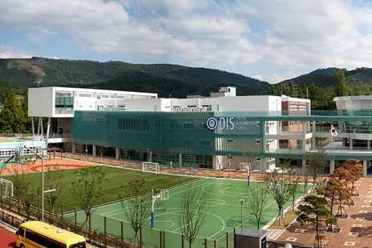

完善的外国人居住环境
- Home
- 投资优势
- 大邱独特的投资环境
- 完善的外国人居住环境
完善的外国人居住环境
随着大韩民国第一号外国语教育机关—大邱国际学校的成立，改善了外国人子女(幼儿园、小学、中学、高中)的教育环境。
- 大邱国际学校 DIS


- 位置 : ESIAPOLIS内[大邱广域市 凤舞洞 八公路 东面(映伸学校旁边)]
- 规模 : 17,815㎡
- 开业时间 : 2010年8月
- 学生数 : 小学、中学、高中总共约 580 名(另外开设幼儿园两个班)
- 教育课程 : 运营幼儿园、小学、中学、高中课程
- 经营单位 : 李学院(Lee Academy)，美国
- 10家特级酒店与丰富的购物设施
- 3,000个医疗设施
- 舒适的自然环境，周围有着八公山、琵瑟山、琴湖江等。
- 庆州、安东靠近大邱近郊，庆州分布着可同时体验佛教文化和儒教文化的文化财产；安东具备丰富的旅游资源，同时它的文化遗址被“联合国教育、科学及文化组织(UNESCO)”指定为世界文化遗产。
位于大邱市的外国人学校
| 学校名称 | 学校位置 | 课程 | 学生数 |
|---|---|---|---|
| TAS(大邱美国学校) | 大邱 南区 大明洞 Camp George 内 |
幼儿园、小学、中学、高中 | 800 |
| 华侨学校 | 大邱 中区 华侨镇内 | 幼儿园、小学、中学、高中 | 小学部 200 中高部 70 |
医疗机关
| 总计 | 综合医院 | 一般医院 | 韩医方医院 | 牙科医院 | 助产院 | 附属医院 |
|---|---|---|---|---|---|---|
| 3,073家 | 11 | 1,605 | 732 | 718 | 1 | 6 |
酒店
| 分类 | 酒店名称 | 客房数 | 网站 |
|---|---|---|---|
| 特1级 | Inter Burgo 酒店 | 342 | hotel.inter-burgo.com |
| 诺富特酒店(NOTOTEL) 大邱城市中心 |
204 | www.novotel.com | |
| 格兰德酒店(Grand) | 150 | www.daegugrand.co.kr | |
| 特2级 | Inter Burgo Exco 酒店 | 303 | ibexco.co.kr/index.html |
| GS 广场酒店 | 88 | www.gsplazahotel.com | |
| 机场酒店 | 51 |
www.htlair.com www.hotelairport.co.kr |
|
| Eldis Regent 酒店 | 52 | www.eldishotel.com | |
| 王子酒店 | 117 | www.princehotel.co.kr | |
| Saint Western 酒店 | 54 | www.saintwestern.co.kr |